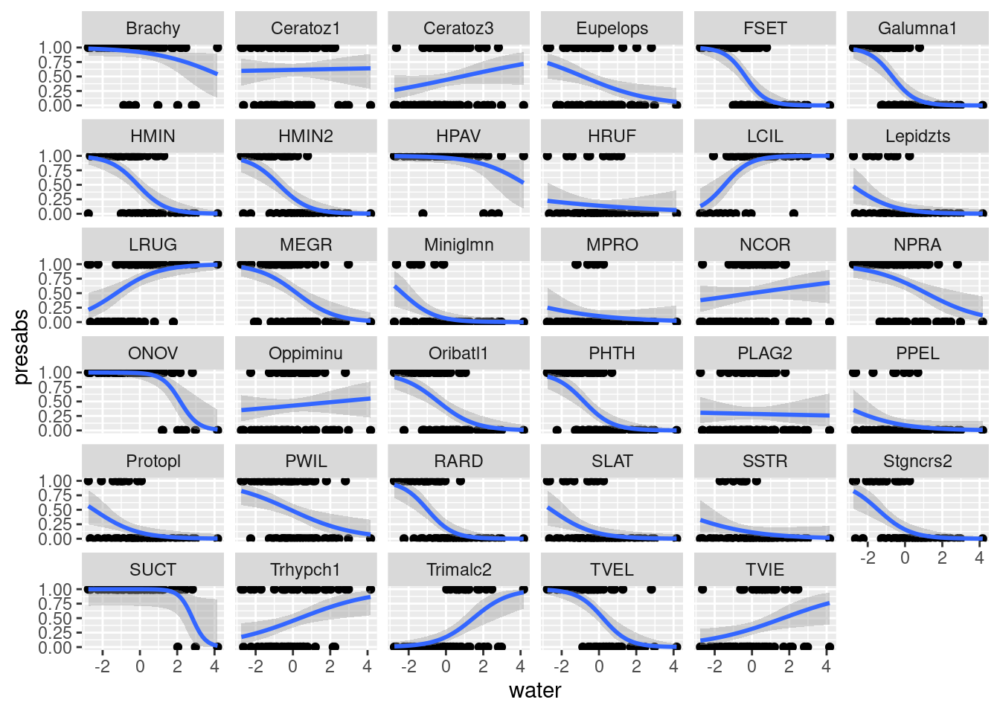
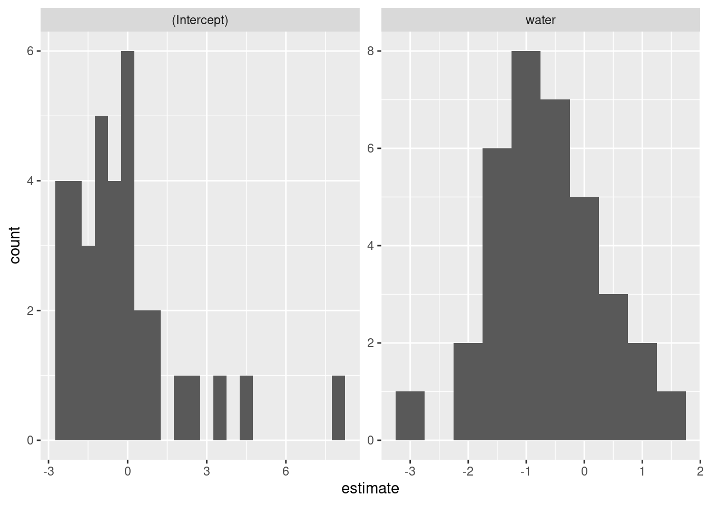
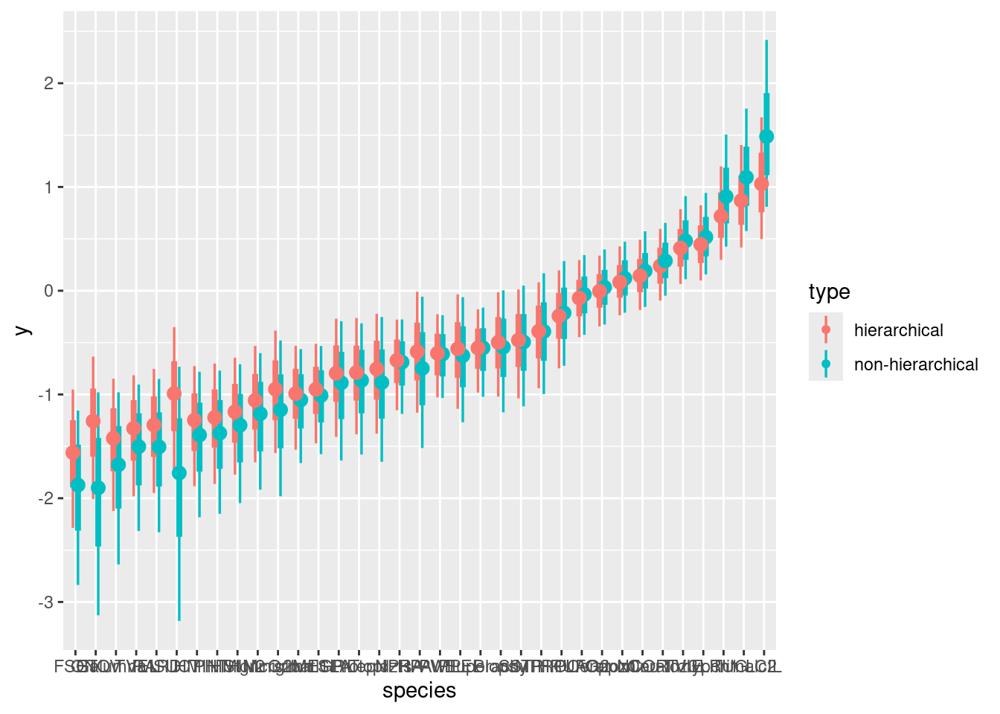

suppressPackageStartupMessages(library(dplyr))
library(ggplot2)
library(tidyr)
# library(cmdstanr)
suppressPackageStartupMessages(library(rstan))
rstan_options("auto_write" = TRUE)
options(mc.cores = parallel::detectCores())
library(tidybayes)
data(mite, package = "vegan")
data("mite.env", package = "vegan")Summarizing many univariate models
A secret weapon for when you’re building hierarchical models.
We’ve already looked at univariate models. When we fit the same model to multiple different groups, we don’t expect the same values for all the coefficients. Each thing we are studying will respond to the same variable in different ways.
Hierarchial models represent a way to model this variation, in ways that range from simple to complex.
Before we dive in with hierarchical structure, let’s build a bridge between these two approaches.
This is useful to help us understand what a hierarchical model does.
However it is also useful from a strict model-building perspective – so useful that Andrew Gelman calls it a “Secret Weapon”
Loading models and data
And some quick data restructuring to combine both.
# combine data and environment
mite_data_long <- bind_cols(mite.env, mite) |>
pivot_longer(Brachy:Trimalc2, names_to = "spp", values_to = "abd")To keep things simple and univariate, let’s consider only water concentration as an independent variable.
First, a quick word about centering and scaling a predictor variable:
- I center the predictor by subtracting the mean. This changes the intercept of my linear predictor. it becomes the mean log-odds of occurrance when the water content is average
- I divide water content by 100. The dataset has units of grams per Litre of water (see
?vegan::mite.envfor more details). This is fine, but I don’t think mites are able to sense differences as precise as a millimeter of water either way. by dividing by 10 I transform this into centilitres, which is more informative.
mite_data_long_transformed <- mite_data_long |>
mutate(presabs = as.numeric(abd>0),
# center predictors
water = (WatrCont - mean(WatrCont)) / 100
)
mite_data_long_transformed |>
ggplot(aes(x = water, y = presabs)) +
geom_point() +
stat_smooth(method = "glm", method.args = list(family = "binomial")) +
facet_wrap(~spp)`geom_smooth()` using formula = 'y ~ x'
some things to notice about this figure:
- the x-axis scale has been transformed from “grams per litre” to “centilitres away from average
- there is a ton of variation in how different species respond to water!
mite_many_glms <- mite_data_long_transformed |>
nest_by(spp) |>
mutate(logistic_regressions = list(
glm(presabs ~ water,
family = "binomial",
data = data))) |>
mutate(coefs = list(broom::tidy(logistic_regressions)))
Split-Apply-Combine
To explore this kind of thinking, we are going to use an approach sometimes called “split-apply-combine”
There are many possible ways to do this in practice. We are using a technique here from the tidyverse, which you can read more about.
mite_many_glm_coefs <- mite_many_glms |>
select(-data, -logistic_regressions) |>
unnest(coefs)
mite_many_glm_coefs |>
ggplot(aes(x = estimate, y = spp,
xmin = estimate - std.error,
xmax = estimate + std.error)) +
geom_pointrange() +
facet_wrap(~term, scales = "free")As you can see, some of these estimates are high, others low. We could also plot these as histograms to see this distribution.
mite_many_glm_coefs |>
ggplot(aes(x = estimate)) +
geom_histogram(binwidth = .5) +
facet_wrap(~term, scales = "free")
Once again, the two parameters of this model represent:
- Intercept The probability (in log-odds) of a species being present at the average water concentration. some species are common, others are rare.
- water this is the change in probability (in log-odds) as water increases by one centilitre per litre of substrate.
Say it in Stan
The above tidyverse approach is very appealing and intuitive, but we can also do the same procedure in Stan.
all_species_unpooled <- stan_model(
file = "topics/correlated_effects/all_species_unpooled.stan")
all_species_unpooledS4 class stanmodel 'anon_model' coded as follows:
data {
// number of rows in dataset
int<lower=0> Nsites;
// number of species
int<lower=0> S;
// one environmental variable to use in prediction
vector[Nsites] x;
// response site (rows) by species (columns) 2D array
array[Nsites,S] int <lower=0,upper=1> y;
}
parameters {
// parameters are now VECTORS
vector[S] intercept;
vector[S] slope;
}
model {
for (s in 1:S){
y[,s] ~ bernoulli_logit(intercept[s] + slope[s] * x);
}
// priors don't change because Stan is vectorized:
// every element of the vector gets the same prior
intercept ~ normal(0, 3);
slope ~ normal(0, 3);
} Let’s fit this model by passing in the data:
mite_bin <- mite
mite_bin[mite_bin>0] <- 1
mite_pa_list <- list(
Nsites = nrow(mite_bin),
S = ncol(mite_bin),
x = with(mite.env, (WatrCont - mean(WatrCont))/100),
y = as.matrix(mite_bin)
)
all_species_unpooled_posterior <-
rstan::sampling(
all_species_unpooled,
data = mite_pa_list,
refresh = 1000, chains = 4
)now let’s try to plot this:
# start by looking at the names of variables
# get_variables(all_species_unpooled_posterior)
post_pred <- tidybayes::spread_rvars(all_species_unpooled_posterior,
intercept[spp_id], slope[spp_id]) |>
expand_grid(water = seq(from = -4, to = 4, length.out = 10)) |>
mutate(prob = posterior::rfun(plogis)(intercept + slope*water),
spp = colnames(mite_bin)[spp_id]) |>
ggplot(aes(x = water, dist = prob)) +
tidybayes::stat_lineribbon() +
facet_wrap(~spp) +
scale_fill_brewer(palette = "Greens")
post_predWe can imitate the original figure by adding the observed data in orange:
post_pred +
geom_point(aes(x = water, y = presabs),
inherit.aes = FALSE,
data = mite_data_long_transformed,
pch = 21,
fill = "orange")
EXERCISE
Add hierarchy to both the slope AND the intercept of this model. Do not try to model them as correlated: the
lmersyntax would bey ~ 1 + water + (1 | species) + (0 + water | species)Make a plot of the slope coefficients from both models, with and without hierarchy. Are they the same? How are they different?
Make a posterior prediction of species richness in these communities.
SOLUTION
First we rewrite the Stan model from above, replacing the standard deviations with parameters. We do this for the priors on the intercepts and slopes separately.
all_species_partpooled <- stan_model(
file = "topics/correlated_effects/all_species_partpooled.stan")
all_species_partpooledS4 class stanmodel 'anon_model' coded as follows:
data {
// number of rows in dataset
int<lower=0> Nsites;
// number of species
int<lower=0> S;
// one environmental variable to use in prediction
vector[Nsites] x;
// response site (rows) by species (columns) 2D array
array[Nsites,S] int <lower=0,upper=1> y;
}
parameters {
// parameters are now VECTORS
vector[S] intercept;
vector[S] slope;
real<lower=0> sigma_intercept;
real<lower=0> sigma_slope;
real avg_intercept;
real avg_slope;
}
model {
for (s in 1:S){
y[,s] ~ bernoulli_logit(intercept[s] + slope[s] * x);
}
// priors don't change because Stan is vectorized:
// every element of the vector gets the same prior
intercept ~ normal(avg_intercept, sigma_intercept);
slope ~ normal(avg_slope, sigma_slope);
avg_intercept ~ normal(0, 1);
avg_slope ~ normal(0, 1);
sigma_intercept ~ exponential(5);
sigma_slope ~ exponential(5);
} Sample the model
all_species_partpooled_posterior <-
sampling(
all_species_partpooled,
data = mite_pa_list,
refresh = 1000, chains = 4
)Plot posterior predictions of trendlines, just as before:
post_pred_partpooled <- tidybayes::spread_rvars(all_species_partpooled_posterior,
intercept[spp_id], slope[spp_id]) |>
expand_grid(water = seq(from = -4, to = 4, length.out = 10)) |>
mutate(prob = posterior::rfun(plogis)(intercept + slope*water),
spp = colnames(mite_bin)[spp_id]) |>
ggplot(aes(x = water, dist = prob)) +
tidybayes::stat_lineribbon() +
facet_wrap(~spp) +
scale_fill_brewer(palette = "Reds") +
geom_point(aes(x = water, y = presabs),
inherit.aes = FALSE,
data = mite_data_long_transformed,
pch = 21,
fill = "blue")
post_pred_partpooledComparing slope estimates of both models
unpooled_slopes <- tidybayes::spread_rvars(all_species_unpooled_posterior,
slope[spp_id]) |>
mutate(type = "non-hierarchical")
partpooled_slopes <- tidybayes::spread_rvars(all_species_partpooled_posterior,
slope[spp_id]) |>
mutate(type = "hierarchical")
partpooled_slopes |>
bind_rows(unpooled_slopes) |>
mutate(species = colnames(mite_bin)[spp_id],
med_slope = median(slope),
species = forcats::fct_reorder(species, med_slope)) |>
ggplot(aes(x = species, dist = slope, colour = type)) +
stat_pointinterval(position = position_dodge(width = .5)) +
# facet_wrap(~type)
NULL
Posterior distribution of species richness
We can always calculate things out of the posterior distribution, and get a new distribution which reflects the uncertainty in all our parameter estimates.
Here I’m suggesting we calculate the relationship between species richness and water concentration
tidybayes::spread_draws(all_species_partpooled_posterior,
intercept[spp_id], slope[spp_id], ndraws = 700) |>
expand_grid(water = seq(from = -8, to = 6, length.out = 10)) |>
mutate(prob = plogis(intercept + slope*water),
spp = colnames(mite_bin)[spp_id]) |>
nest_by(water, .draw) |>
mutate(S = sum(data$prob)) |>
select(-data) |> unnest() |>
ggplot(aes(x = water, y = S)) +
tidybayes::stat_lineribbon() +
scale_fill_brewer(palette = "Blues", direction = -1)Warning: `cols` is now required when using `unnest()`.
ℹ Please use `cols = c()`.